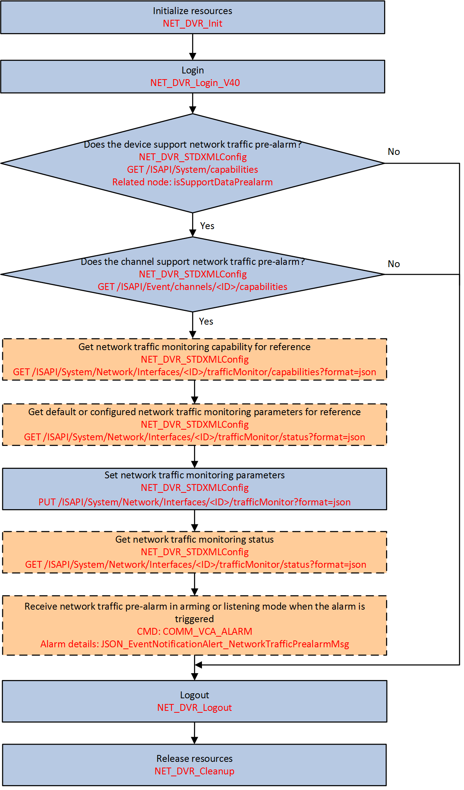

You can set or search for data plans, monitor data usage, and set a
traffic limit. When the limit is exceeded, the alarm will be triggered and uploaded
automatically.

Figure 1 Programming Flow of
Configuring Network Traffic Pre-alarm
-
Call NET_DVR_STDXMLConfig to transmit the request URI:
GET/ISAPI/System/capabilities to check whether the device supports network
traffic pre-alarm.
-
Call NET_DVR_STDXMLConfig to transmit the request URI: GET
/ISAPI/Event/channels/<ID>/capabilities to check whether the channel supports network traffic pre-alarm.
- Optional:
Call NET_DVR_STDXMLConfig to transmit the request URI: GET
/ISAPI/System/Network/WirelessDial/Interfaces/<ID>/trafficMonitor/capabilities?format=json to get network traffic monitoring capability
for reference.
- Optional:
Call NET_DVR_STDXMLConfig to transmit the request URI: GET
/ISAPI/System/Network/WirelessDial/Interfaces/<ID>/trafficMonitor?format=json to get default or configured network traffic monitoring parameters for
reference.
-
Call NET_DVR_STDXMLConfig to transmit the request URI: PUT
/ISAPI/System/Network/WirelessDial/Interfaces/<ID>/trafficMonitor?format=json to set network traffic monitoring
parameters.
- Optional:
Call NET_DVR_STDXMLConfig to transmit the request URI: GET
/ISAPI/System/Network/WirelessDial/Interfaces/<ID>/trafficMonitor/status?format=json to get network traffic monitoring status.
- Optional:
Set lCommand of alarm/event callback function
MSGCallBack to "COMM_VCA_ALARM" (command No.: 0x4993) and set for receiving network
traffic alarm in arming mode (refer to Receive Alarm/Event in Arming Mode for details) or listening mode (refer to Receive Alarm/Event in Listening Mode for details).
Note:
The traffic pre-alarm only supports the default linkage
action (upload to center) and arming schedule (all-day schedule).
Call NET_DVR_Logout and NET_DVR_Cleanup to log out of the device and release the
resources.